China Employee Termination 2026: Pulse Escalation-Lanes Brief for Foreign Employers
Key takeaways
- The strongest protection against China termination disputes is clear escalation lanes before communication.
- Foreign teams should pre-assign lane owners for legal route, evidence integrity, payroll closure, and local interpretation.
- Most avoidable losses happen when issues are noticed but not escalated fast enough.
- Escalation thresholds should be explicit and tied to hold/no-go decisions.
- This brief prioritizes practical decision flow; legal depth is secondary in the appendix.
What changed and why this matters now
In many multinational teams, problems are not hidden—they are visible but unresolved because ownership is unclear. A manager flags contradictory facts, payroll flags an unsettled IIT issue, local counsel flags interpretation uncertainty, yet the case still advances because no one triggers a mandatory hold. A lane-based escalation model solves this by defining where each issue goes, who decides, and how fast action must occur.
This run uses an escalation-lanes format (distinct from prior matrix/switchboard/scorecard/signal/rhythm structures) to improve decision speed and accountability.
Plain-language legal context first
China employer-side termination generally requires a lawful basis, coherent factual support, and consistent execution. Public legal anchors include the PRC Labor Contract Law framework, implementing regulation references (including Decree No. 535 context), and Supreme People’s Court labor-dispute interpretation materials. For foreign operators, the practical reading is simple: route quality and execution consistency determine dispute resilience.
Escalation lanes operationalize this by preventing known issues from being deferred past critical checkpoints.
Pulse escalation lanes (impact-first)
Lane A — Legal Route Escalation
Trigger: route-fact mismatch, weak rationale memo, unresolved fallback.
Owner: Legal lead + HRBP.
SLA: same-day triage; resolution target within 24h.
Default outcome: hold until route confidence is restored.
Lane B — Evidence Escalation
Trigger: chronology gaps, contradictory records, unclear source ownership.
Owner: HR Operations + Compliance reviewer.
SLA: incident logging immediately; remediation window 24-48h.
Default outcome: communication prep paused.
Lane C — Payroll/Tax Escalation
Trigger: unresolved final pay/severance/IIT/social treatment.
Owner: Payroll lead + Tax support.
SLA: same-day recalculation plan; closure before scheduling communication.
Default outcome: no-go until sign-off complete.
Lane D — Local Interpretation Escalation
Trigger: conflicting city-level practical guidance.
Owner: Local advisor coordinator + Legal lead.
SLA: structured interpretation memo within 48h.
Default outcome: route decision frozen pending resolution.
Lane E — Communication Discipline Escalation
Trigger: off-script risk, unbriefed spokesperson, or prior script drift.
Owner: HR lead + manager sponsor.
SLA: pre-meeting control reset same day.
Default outcome: reschedule communication if unresolved.
Lane F — Archive/Closure Escalation
Trigger: missing indexed documentation for case closure.
Owner: Compliance + records owner.
SLA: closeout QA within 1 business day post-event.
Default outcome: case remains open.
Why this works for foreign employers
Foreign HQ teams often need clear governance mechanics, not just legal summaries. Escalation lanes create transparent accountability across functions and reduce “silent risk carryover” between meetings. This improves both speed and control under cross-border pressure.
Practical scenarios
Scenario 1: Evidence issue discovered hours before planned communication
Chronology contradiction emerges late.
Lane response: trigger Lane B, auto-hold communication, complete remediation then re-clear.
Scenario 2: Payroll uncertainty after legal approval
Legal route is green; payroll detects unresolved IIT treatment.
Lane response: trigger Lane C, no-go until closure sign-off is complete.
Scenario 3: Conflicting local advice on route viability
National-level policy appears clear but local practice view diverges.
Lane response: trigger Lane D and freeze route progression pending interpretation memo.
Role-owned SOP (lane governance)
Step 1 — Define lane ownership at case opening
Owners: HRBP + Legal + Payroll lead
- Assign lane owners and backups.
- Publish escalation contacts and SLAs.
Step 2 — Monitor triggers continuously
Owners: all functional contributors
- Log issues against specific lane.
- Classify severity and urgency.
Step 3 — Execute lane-specific triage
Owners: triggered lane owner
- Run lane playbook.
- Record decision and mitigation path.
Step 4 — Apply hold/go rules
Owners: cross-functional decision panel
- Enforce no-go for unresolved critical lane issues.
- Re-open progression only after evidence-backed closure.
Step 5 — Capture outcomes and improve lanes
Owners: Compliance + operations lead
- Track lane recurrence and time-to-resolution.
- Update workflows for repeated triggers.
Required document checklist
- Employee profile + contract context
- Route rationale memo + fallback note
- City-level interpretation memo
- Chronology evidence ledger
- Script package + briefing record
- Payroll/severance/IIT/social worksheet
- Settlement + acknowledgments
- Payment proof artifacts
- Escalation-lane incident log
- Closure memo + archive index
Exception handling playbook
- Multiple lanes triggered simultaneously: appoint incident lead, prioritize route/evidence/payroll first.
- SLA breach: escalate to executive sponsor and auto-extend hold.
- Disagreement between lane owners: require evidence-based tie-break memo.
- Repeat trigger in same lane: mandate systemic fix task, not case-only workaround.
- External deadline pressure: preserve no-go rules; document risk acceptance if override requested.
System implementation notes
- Add structured fields for lane, severity, SLA timer, and resolution status.
- Automate alerts for SLA breaches and unresolved critical lanes.
- Link lane incidents to dispute outcomes for analytics.
- Build dashboard: trigger frequency, mean time to close, repeat-lane hotspots.
- Review monthly for workflow and training updates.
Common mistakes and prevention
- Mistake: escalation without ownership.
Prevention: pre-assigned primary/backup lane owners.
- Mistake: weak SLA discipline.
Prevention: automated timers and breach alerts.
- Mistake: resolving issues verbally only.
Prevention: mandatory written incident and closure notes.
- Mistake: treating local interpretation as non-critical.
Prevention: dedicated Lane D with hold authority.
- Mistake: no learning loop.
Prevention: lane recurrence review and systemic fixes.
What to do now
- Implement six escalation lanes across all active China termination cases.
- Assign named owners, backups, and SLAs at case opening.
- Enforce no-go rules for unresolved critical lane issues.
- Add incident logging tied to case IDs.
- Review lane breaches weekly with cross-functional leads.
- Train managers on communication-lane triggers.
- Convert repeat triggers into workflow automation.
What to watch next
- City-level interpretation changes may increase Lane D activity.
- Case surges can stress payroll-lane SLA performance.
- Practitioner updates may alter evidence expectations, affecting Lane B frequency.
FAQ
1) Why escalation lanes instead of one risk owner?
Because different risk types require different expertise and response speeds.
2) Can a single lane block progression?
Yes. Critical unresolved lane issues should trigger no-go.
3) How fast should route issues be escalated?
Same day, with clear 24h triage target.
4) Who decides final go/hold?
Cross-functional panel across HR, legal, and payroll.
5) Is local interpretation a separate lane?
Yes, because city-level practice can materially change defensibility.
6) What is the top avoidable governance failure?
Failing to escalate known issues before communication.
7) How do we improve lane performance?
Track breach patterns and strengthen workflows where recurrence is highest.
Legal depth appendix (secondary)
This brief is grounded in official/legal and practitioner materials relevant to employer-side termination operations in China. Core anchors include the PRC Labor Contract Law framework, implementing regulation references associated with Decree No. 535 context, and Supreme People’s Court labor-dispute interpretation materials. Practitioner and payroll-context sources are used for practical interpretation for foreign employers. Residual uncertainty remains city-specific and fact-specific and should be validated with localized professional advice in live matters.
Disclaimer
This content is informational only and does not constitute legal, tax, or employment advice.
Sources
- National People’s Congress (Labor Contract Law, English text), accessed 2026-03-05: http://www.npc.gov.cn/zgrdw/englishnpc/Law/2007-12/13/content_1384064.htm
- State Council Gazette reference (implementing regulation / Decree No. 535 context), accessed 2026-03-05: https://www.gov.cn/gongbao/content/2008/content_1124615.htm
- Supreme People’s Court labor dispute interpretation update page, accessed 2026-03-05: https://www.court.gov.cn/fabu/xiangqing/243981.html
- China Briefing, Employee Termination in China, accessed 2026-03-05: https://www.china-briefing.com/news/employee-termination-in-china/
- ICLG Employment & Labour Laws and Regulations: China, accessed 2026-03-05: https://iclg.com/practice-areas/employment-and-labour-laws-and-regulations/china
- Littler ASAP analysis on China employment law developments, accessed 2026-03-05: https://www.littler.com/news-analysis/asap/key-recent-developments-chinas-employment-law-china-us-comparative-perspective
- PwC PRC Individual Income Tax summary, accessed 2026-03-05: https://taxsummaries.pwc.com/peoples-republic-of-china/individual/taxes-on-personal-income
Need local employment support in China?
If you need a compliance-first partner for hiring, payroll, and risk controls in China, China-Payroll.com can help evaluate the right setup.
Image Prompt Pack
Create a 16:9 hero image for article title: 'China Employee Termination 2026: Pulse Escalation-Lanes Brief for Foreign Employers'. Scene: global operations team evaluating workforce model options for China market entry. Include motifs: decision matrix, org cha…